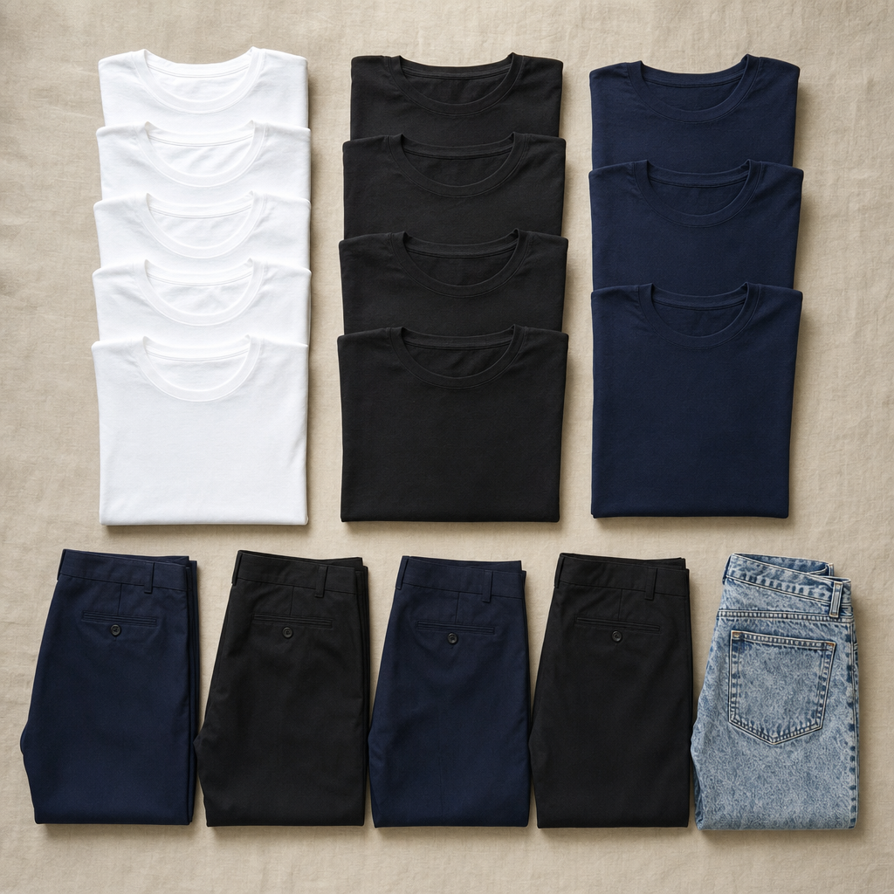

Across 234 boy band members coded from 35 years of charting music videos, only 12 wear bleached frosted tips — 5.1% of the dataset.
Eight of those twelve are in bands whose biggest hit landed between 2000 and 2004. That single five-year window holds 67% of every frosted tip in the entire chart history; the era's per-period rate is 14.8%, eight times higher than the late 1990s and the early 2000s combined elsewhere.
The look you remember is real. It's also, almost exactly, one fashion micro-cycle five years long — a carbon-dated fossil layer of one moment in pop. Frosted tips are not the boy band aesthetic. They are the one boy band aesthetic that pop memory froze.
Frosted-tip rate, percent of members on screen, by 5-year era. The Early 2000s point sits eight times above its neighbors.
The Pudding's Internet Boy Band Database covers 55 acts that charted on the U.S. Billboard Hot 100 between 1980 and 2018, and the 234 individual members who appeared on screen in their highest-charting music videos. More than 40 volunteer annotators coded each member by hair, clothing, accessories, instruments, skin tone, and height — every member double-coded with a third reviewer breaking ties.
Of the 55 bands, 10 reached #1 with their biggest single and 33 — 60% of the dataset — reached the Top 10. The median peak position is just #5. This is not a long tail of forgotten acts; it is a tightly curated record of the boy bands who actually got hits.
Their biggest hits cluster sharply: 14 bands peak between 1990 and 1994, 14 between 1995 and 1999, and 13 between 2000 and 2004 — about three-quarters of the entire 35-year archive in a single 15-year window. The biggest single year is 2000, when nine different boy bands each had their highest-charting song.
The genre is a fuzzy category by design. The Pudding's filter sweeps in vocal R&B groups (Boyz II Men, Jodeci, Blackstreet), the prefab pop of the Lou Pearlman era, K-pop (BTS), and Latin acts (Aventura, Menudo) under one umbrella. The acknowledgment matters: any pattern in the data is "across the kinds of male vocal groups that crossed over to U.S. pop charts" — not a universal claim about all boy bands.
Boy bands per year. 2000 alone holds nine peaks — three times the typical year.
Bucketed into five-year eras, the boy band industry looks like a textbook product cycle. One band in 1980-1984. Three in 1985-1989. Then 14 in 1990-1994 (the New Edition / Boyz II Men R&B-pop wave), 14 in 1995-1999 (the Backstreet/NSYNC boom), 13 in 2000-2004 (the boom continuing), then a collapse — 4 in 2005-2009 — followed by a small rebound in the early 2010s and a single import (BTS) in 2015-2018.
The lineage tree behind those counts is sharper than the year axis suggests. New Edition spawns Bell Biv DeVoe. The Lou Pearlman empire produces Backstreet Boys, NSYNC, O-Town, and LFO. The British/Irish wave brings Take That, Westlife, 5ive, BBMak, and Brother Beyond. Disney's tween-TV machine produces the Jonas Brothers, Big Time Rush, and Mindless Behavior. Imports outside the Anglo world bring Aventura, Menudo, Son by Four, and BTS. Reality-TV pop in the 2010s produces One Direction, The Wanted, and 5 Seconds of Summer.
Reading the dataset as one chart line — "boy bands rise and fall" — flattens those branches. Reading the same numbers as a family tree explains why hair, skin tone, and dress code turn over so sharply era by era.
Boy bands by 5-year era. Three peak eras (gold) hold three quarters of all 55 bands.
In 234 individual styling decisions made by 55 separate stylists across 35 years, 111 members — 47.4% — wear a top-and-bottom palette drawn entirely from black, white, or navy blue. The single most common combination is white shirt + black bottoms (33 members, 14.1%), followed by black shirt + navy blue (30, 12.8%), all-black (26, 11.1%), and white + navy blue (22, 9.4%).
Bottom color narrows the palette further. 79.1% of all members wear navy blue or black on the bottom — even though there are ten coded options, only navy blue and black ever clear 11%.
The format constraint shows up in the silhouette too. 47% of all members wear dress pants and 41% wear jeans (including 3 in acid-wash) — together, 88% of the bottoms in the entire dataset. Sweat pants, shorts, cargo pants, and overalls — the casual streetwear vocabulary — share what's left.
These are not 234 men dressing themselves. They are 234 men dressed by stylists working in a single visual grammar. The uniform is unofficial because no one writes it down; it's enforced because everyone copies it.

Top eight shirt + bottom color combinations. The first five — all drawn from black, white, and navy — together cover over half of every member coded.
Each square is one of the 234 boy band members. Top half = shirt color, bottom half = bottom color. Hover for the combination. The black-white-navy bias is visible from across the room.
Hair length tells the same per-era story. Short hair runs at 45% in the 1980s, climbs to 74% in the late 1990s, holds at 70% through the early 2000s, then falls to 32% in the early 2010s as One-Direction-style mid-length swoops return. By the late 2010s sample (BTS), 0% of members have short hair — everyone is medium-length.
Across all members, the dominant haircuts are fade (24%), spiked (17%), high-top (11%), shaggy (10%), and crew (8%). Five styles cover almost 70% of all 234 members.
But the single sharpest signal in the dataset isn't a haircut at all — it's a coloring decision. Frosted tips run at 0% across the 1980s, 1.8% across both halves of the 1990s, then jump to 14.8% from 2000 to 2004 before falling back to 5.9%, 4.5%, and 0%. That 14.8% means roughly one in every seven boy band members on screen during 2000-2004 had bleached hair tips. It's the closest thing this dataset has to a fashion fossil — a single five-year stratum where everyone, briefly, did the same thing.
Two coupled hair signals by era. Gold = frosted-tip rate (left axis). Slate dashed = short-hair share (right axis). Both peak in the 1995-2004 window.
A five-second close-up of the artifact itself — the single five-year stratum the dataset records.
Across all 234 members, 41.5% are coded light, 7.7% medium-light, 9.8% medium, 25.2% medium-dark, and 15.8% dark. Compared to the U.S. male population aged 15-24 over this period (roughly 60% non-Hispanic white, 14% Black), boy bands are slightly under-white and slightly over Black — an unusual fact for U.S. Top 40 of any other format.
The era-by-era breakdown is the more dramatic story. In the early 1990s, only 14% of boy band members on screen are coded light; 77% are medium-dark or dark — the New Edition / Boyz II Men / Jodeci R&B-pop wave. By the early 2000s — peak Backstreet / NSYNC — the light share has climbed to 61% and the medium-dark-or-dark share has fallen to 22%. By the early 2010s, with One Direction, 5SOS, and The Wanted, light is 59% and medium-dark-or-dark is 5%.
One way to read the boom-bust pattern of the genre is the shape of those lines crossing each other. The boy band charts visibly desegregated for one decade and then re-segregated. Pop's racial coding was not stable across the whole 35-year window; it inverted twice.
The same pattern shows up across, not just within, the era. Splitting members by their band's biggest-hit dance speed — pop versus slow — pop acts are 47% light and 33% medium-dark-or-dark. Slow-jam acts are 33% light and 54% medium-dark-or-dark, a 21-percentage-point swing. The R&B/slow-jam tradition stays visibly more diverse than the dance-pop tradition for the entire dataset.
Light-skin share (warm) and medium-dark-or-dark share (deep) by 5-year era. The lines cross around the late 1990s and re-segregate by the late 2010s.
62% of the biggest boy band hits in the dataset are coded "pop" — upbeat dance — and 38% are slow jams. From memory, the genre is dance: "Bye Bye Bye", "I Want It That Way", "Larger Than Life". And in absolute count, that memory is correct.
But of the ten boy band hits that actually reached #1 on the Hot 100, six are coded slow jam: New Kids' "I'll Be Loving You", Color Me Badd's "I Adore Mi Amor", Boyz II Men's "End of the Road", SILK's "Freak Me", All-4-One's "I Swear", and Hi-Five's "I Like the Way" round out one-half of the list. The dance-pop #1s are real — Hanson's "MMMBop", NSYNC's "It's Gonna Be Me", Blackstreet's "No Diggity", B2K's "Bump, Bump, Bump" — but they are outnumbered.
The visual record agrees. Among slow-jam acts, 25% of all members wear suit jackets on screen. Among pop-dance acts, only 12% do — half as many. The genre's loudest mode is the dance hit; the genre's chart-topping mode is the ballad in a suit.
Ten #1 hits, two columns. Each dot is a band-song-year — slow-jam ballads (rose) outnumber dance-pop (teal) six to four.
Of 234 members, 197 (84.2%) never touch an instrument in their breakthrough music video. Of the 37 who do, guitar leads at 17, then drums (7), keyboard (6), and bass (5). The format is, definitionally, a vocal-and-choreography package: hands stay free.
One era breaks the rule. In the late 2000s — driven entirely by the Jonas Brothers and the brief pop-rock-hybrid wave — 53% of members on screen are playing an instrument. Five years either side of that window, the rate is below 20%. By the late 2010s the rate is back to 0%.
Faces are mostly young: 56% of all members appear clean-shaven in their breakthrough video. Of the 103 with any facial hair, mustache (alone or in combination) accounts for over 60%. Full beards appear on just two members in 35 years.
The styling pattern is internally consistent. Boy bands sing, dance, and look young. Anything that would crowd that — instruments, beards — is the rare exception.
The 84% no-instrument default and the late-2000s exception. The Jonas Brothers and 5SOS spike to ~53%; before and after, the rate hugs the floor.
Heights are recorded for 119 of 234 members (51%; the rest are missing). Among those measured, the mean is 69.6 inches and the median is 69 inches — almost exactly the CDC's reported U.S. adult male median of 69.1. The shortest member coded is 60 inches; the tallest is 79.
Boy bands aren't tall, and they aren't short. They are built from the population mean — which is precisely what makes them look "castable", as the Pudding annotators put it: every member could be the tallest in his band, or the shortest, depending on which other four men he stands next to.
Every band in the dataset is represented by exactly one music video — its highest-charting song's official upload to YouTube. Browse the lineages below, then pick a band: each opens to the music video that the dataset coded.
What the gallery makes obvious is that "boy band" is not one thing. Bell Biv DeVoe (1990, R&B/New Jack Swing) and BTS (2017, K-pop) appear in the same dataset under the same word. Boyz II Men's vocal-harmony ballad and One Direction's reality-TV pop appear in the same dataset under the same word. Hanson's three-brothers-with-guitars and the Jonas Brothers' Disney-TV hybrid pop appear in the same dataset under the same word.
The reason the field guide works at all is that one set of signals — coordinated outfits, choreographed performance, four to five young men, vocal harmonies, no instruments — does cut across all the lineages. The visual codes change every five years. The thing those codes are codifying does not.
Seven lineages, seven canonical videos. Click any "Play canonical video" button to expand a YouTube embed — that single video is what the dataset coded for that lineage's flagship band.
The Pudding annotators picked one music video per band and noted, member by member, what they were wearing and what they looked like. Five years of work by 40+ volunteers produced a categorical version of what most pop fans absorb without thinking about: that boy bands are recognizable on sight.
The dataset, viewed all at once, says that recognition is built from a small set of visual codes that turn over every 5 to 10 years. Frosted tips for one window. Suit-and-pant for another. Dance pants and crew cuts for another. A 47% black-white-navy uniform across all of it.
What the dataset cannot tell you is whether the boy band keeps coming back because the audience needs the format, or because the music industry remembers how profitable it was. The data only shows that, every time the format returns, the codes that say "boy band" rearrange themselves into a new combination — and the audience picks up the signal almost instantly.
Data source
Background & context
Benchmarks
Tools